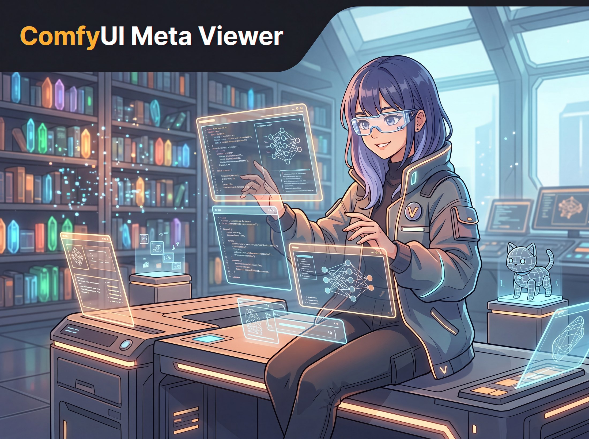
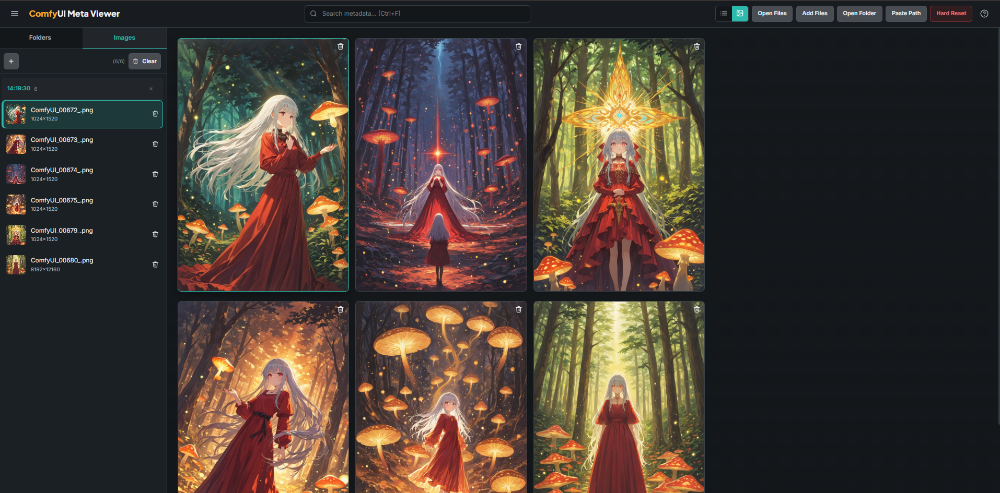
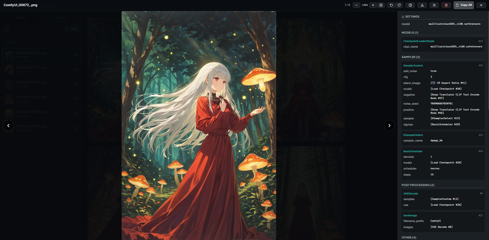

Metadata extraction
Read PNG chunks, EXIF, ComfyUI prompt JSON, model names, LoRA weights, seeds, samplers, and resolution data.

Local-first metadata workspace for ComfyUI
Browse generated image folders as a polished gallery, inspect prompts and model settings, open the original workflow graph, and create transparent PNG cutouts without uploading your work anywhere.
Why it exists
ComfyUI Meta Viewer turns a folder full of generated images into a fast local catalog. It keeps files in place, stores metadata in SQLite, renders thumbnails on demand, and gives every image a readable story: prompt, seed, sampler, model, LoRA, EXIF, and workflow.
Core workflow
Read PNG chunks, EXIF, ComfyUI prompt JSON, model names, LoRA weights, seeds, samplers, and resolution data.
Inspect a color-coded SVG node graph with pan, zoom, links, node details, and workflow-aware categories.
Move through large folders with masonry thumbnails, image zoom, rotation, touch swipes, and metadata tabs.
Find images by filename, prompt text, model, sampler, folder, and extracted generation parameters.
Scan folders recursively without copying originals. Incremental mtime checks keep repeat scans quick.
Select the subject in an image and export a transparent PNG while keeping cached results locally.
Interface
The UI is intentionally dense: a resizable sidebar for folders, a fast gallery surface, and a lightbox that keeps metadata close to the image instead of hiding it in raw JSON.


Under the hood
The app is a Flask service with a vanilla ES module frontend, Pydantic response models, SQLite WAL persistence, Pillow image handling, and vendored Fuse.js search.
Install
Python 3.10+ and Poetry are the only manual prerequisites. Windows users can also run `start.bat`.
git clone https://github.com/Lotargo/ComfyUI-Meta-Viewer.git
cd ComfyUI-Meta-Viewer
poetry install --no-root
poetry run python -m app.main